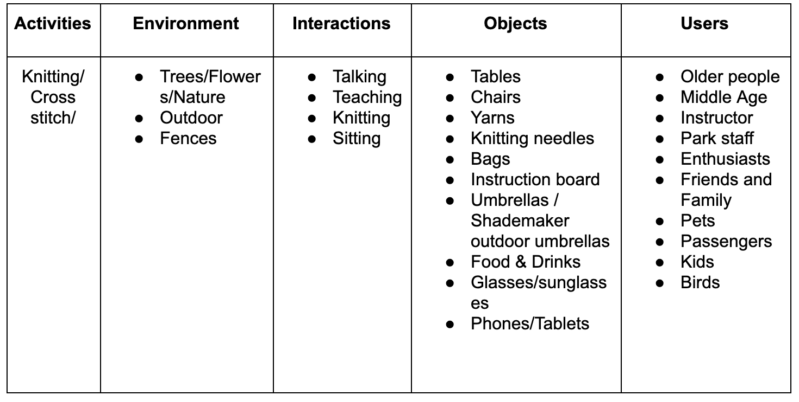
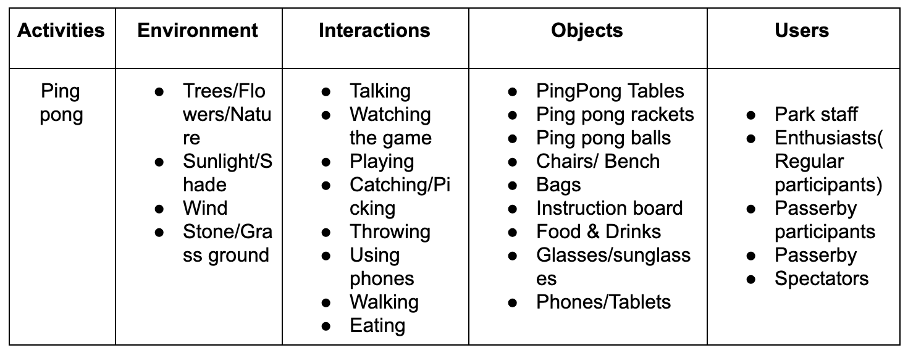
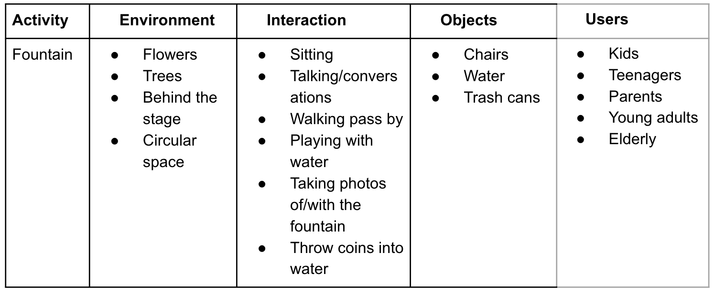
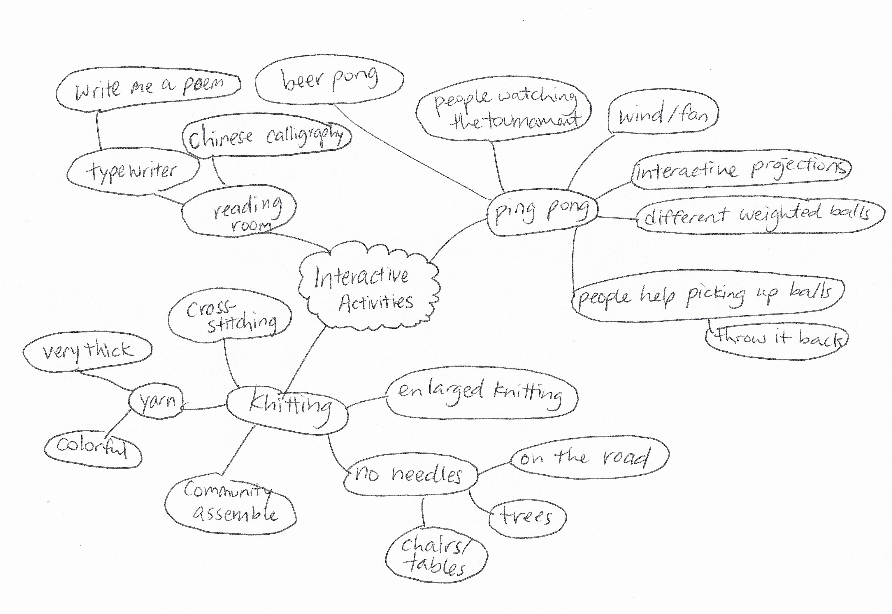
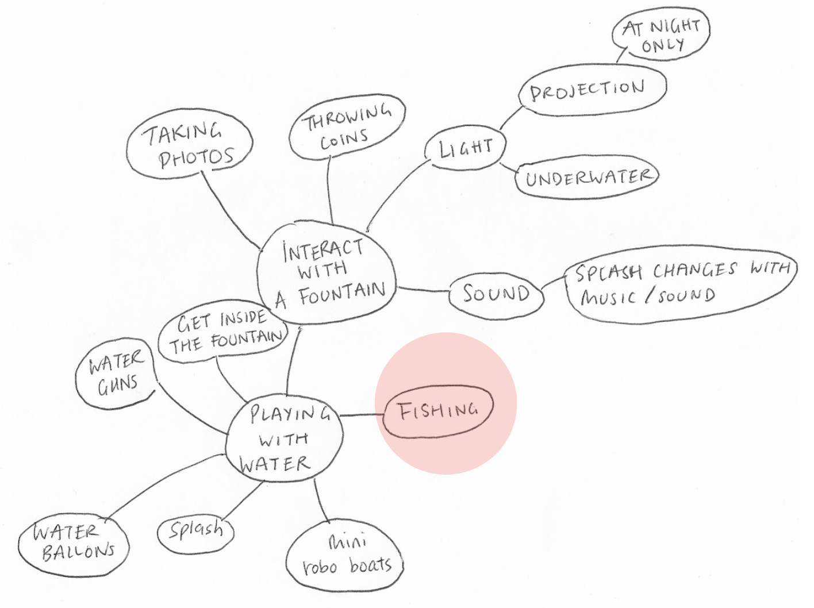
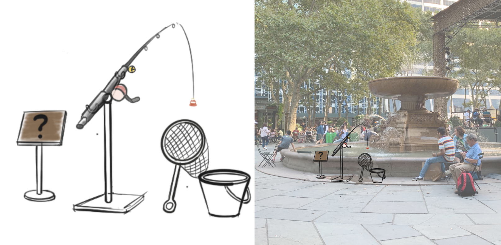

Instruction Sets for Strangers ——— Design Methods
WEEK 1 - FRI, AUG 30TH, 2019
Why Bryant Park?
Bryant Park is one of the few parks that are mostly enjoyed by local New Yorkers. Being surrounded by many office buildings, schools, and New York Public Library, you can find many students and young professionals hanging out at the park. However, the park is also a great place for kids and the elderly. Throughout the year Bryant Park hosts various activities including sports tournaments, painting sessions, dancing classes and much more.Bryant Park is a condensed miniature of New York itself: people from all different age groups, cultures and backgrounds exist harmoniously all in one place.AEIOU
We started by observing some regular activities in Bryant Park.
  
Obesrvation & Behavioral Mapping

Observation of Ping Pong:
- Time: 12:00 - 12:40 pm
- Participant: 10 people
- Read instructions/ask staff: 12 people
- Stop to watch: 43 people
- Help to pick up balls: 31 people
- Participants:
- Most participants come regularly and they know each other, kind of shaping a community. Few are new to this game.
- The game is easily affected by wind.
- For those “irregular” participants, they always sign up and play with their friends coming along.
- Passersby:
- Some of them would interact with the participants by picking ping-pong coincidently.
- Some of them were interested in joining the game but left because they need to sign in and wait for taking turns(10 minutes).
- A lot of people would stop to watch the game for a while.
Observation of Knitting:
Knitting was one of the activities that stood out for us. Knitting is known as a long, repetitive process that requires a lot of patience and commitment from one person. Usually, we associate this activity with moms or grandmas. We thought, how can we revolutionize this activity, reverse the making process and the maker:
- Contributed by many different people from different background/culture/generation
- Short commitment - stitch one and go
- Freeform
- Visual interactions
Observation of the Fountain:

- The fountain is on the central axis of the park, with a large flow of passersby.
- Some people walked past the fountain without even looking at it.
- Most of the people who played around with water are children.
Bryant Park is a space that suggests interactions and socialization - mostly human but also animals. After walking around the park and observing some different activities, we realized that - while Bryant Park is able to bring all different kinds of people together, they rarely interact with one another, - there isn't much reason to. We'd like to give them a reason. A lot of people describe New Yorker as rude, cold-hearted and impatient. We want to find out if that really is the case.
Brainstorming
Guiding Questions:
How can we reinvent the purpose of an activity/game that changes the way people interact and their understanding of the game?
How can we create a relaxing interactive experience among different groups of passersby but costs them little time?
How can we reignite people's curiosity for a daily object/architect/environment?
Concept Sketch
Inspired by knitting:
The idea is that we would enlarge the size of
cross-stitch, setting up a big panel with thick yarn for passersby to knit.

Interaction with the fountain :We planned to set up a set of fishing outfit right next to the fountain, hoping to create contrast to arouse people’s curiosity.
